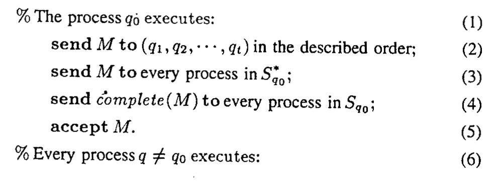
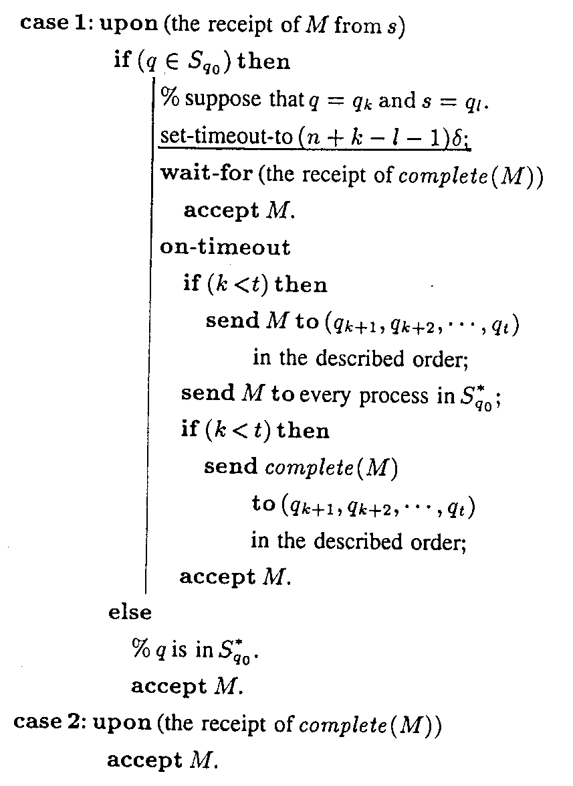
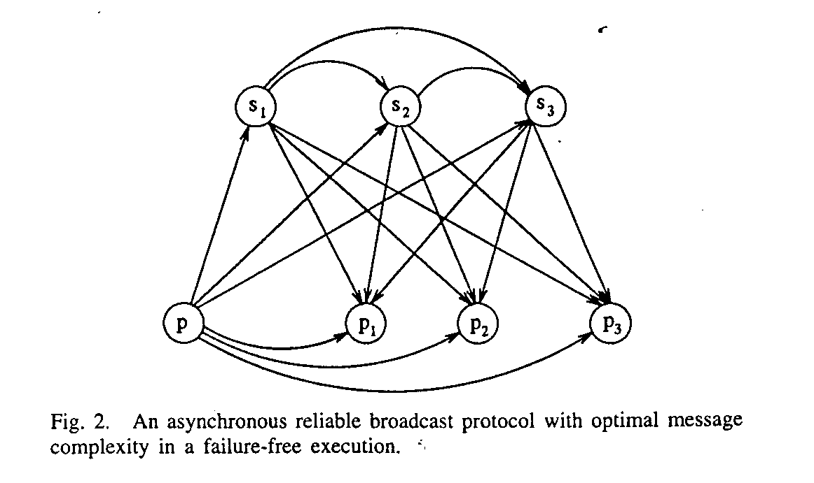
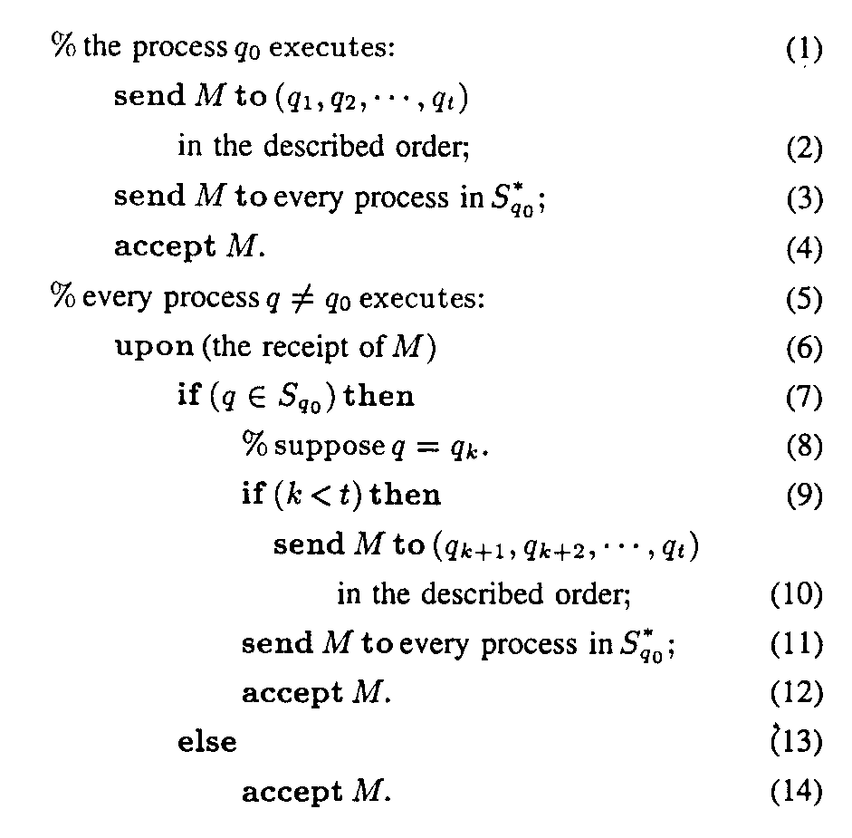
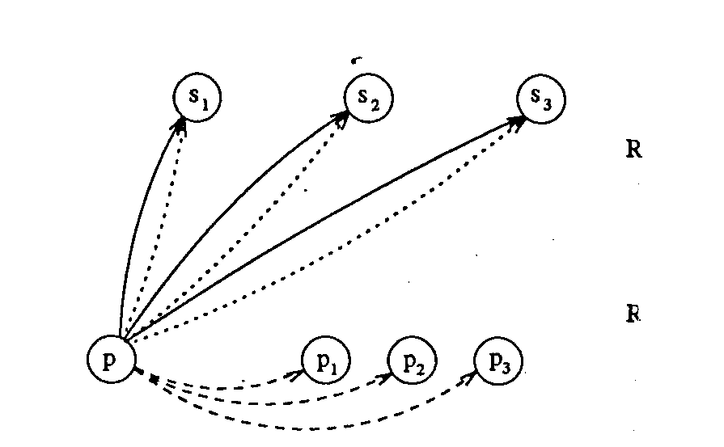

Message-Optimal Protocols for Fault-Tolerant Broadcasts/Multicasts in
Distributed Systems with Crash Failures
Hong-Yi Tzeng and Kai-Yeung Siu
IEEE TRANSACTIONS ON COMPUTERS, Vol.44, No. 2,
FEB,1995 page:346-352.
Abstract
An essential feature in any fault-tolerant design of distributed systems is a mechanism by which a process can reliably broadcast information to other processes of failures. This paper studies the message complexity of fault-tolerant broadcast protocols in weakly synchronous and totally asynchronous distributed systems with point-to-point communication links, where the system failures are caused by the processes but the communication links are completely reliable. We focus on the number of messages required of any fault-tolerant protocol in failure-free execution. We present protocols that, in an n-process system subject to at most t crash failures where 1<= t < (n-1), guarantee the delivery of a message from any process to other nonfaulty processes. In
the absence of crash failure, our protocols require (n+t-1) messages in the weakly synchronous model and (t+1)(n-1-(t/2)) messages in the totally asynchronous model.
Content:
Definitions and Notations
In our model, we assume that a set of n processes are connected by a complete point -to-point network such that any two processes can exchange messages directly, but each process can only deliver at most one message to another process at a time. .
On this paper we only consider crash failures.
Crash failures: At any time a process may stop sending and receiving message.
We now define the problem of reliable broadcast. To facilitate the presentation, we assume that each process p consists of a failure-free write-once storage W(p) which is always available even if p is faulty.
A protocol is called a reliable broadcast protocol if it satisfies the following (RB) conditions:
RB1. Agreement : if any process(correct of faulty) accepts M, all corrects accept M.
RB2. Validity: if a process p does not fail while broadcasting M or if any correct process receives M, all nonfaulty processes accept M.
RB3. Integrity: For any message M, every process accepts M at most once and only if some process broadcast M.
RB4. Termination: The above three conditions RB1.RB2.and RB3.are satisfied eventually.
A reliable broadcast protocol is said to be t-resilient if it can tolerate up to t crash failures and satisfy all the above conditions.
The Weakly synchronous model.
In the weakly synchronous model, one can assume a constant
d such that the processing and delivery of a message can be completed within d units of time.

The Totally asynchronous model.



Created by: Jain-Ming Chen
Date:Apr.17, 1997